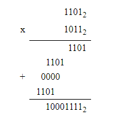

Система числення - це визначений метод представлення чисел та виконання арифметичних операцій над ними. Існують різні системи числення, включаючи десяткову, двійкову, вісімкову та шістнадцяткову системи. Давайте розглянемо основні поняття та історію систем числення.
Десяткова система: Виникла в давньому Єгипті більше 5000 років тому та швидко поширилася по всьому світу.
Двійкова система: Виникла в Азії та Африці в давнину, але стала широко використовуватися в комп'ютерних технологіях з появою комп'ютерів.
Вісімкова система: Також використовується в комп'ютерних технологіях, де кожні три двійкові цифри представлені однією вісімковою цифрою.
Шістнадцяткова система: Також використовується в комп'ютерах, де кожні чотири двійкові цифри представлені однією шістнадцятковою цифрою.
Двійкова система числення є однією з найважливіших систем у комп'ютерних технологіях. Вона використовує дві цифри: 0 і 1. Давайте розглянемо основні поняття та застосування двійкової системи числення.
У двійковій системі кожна цифра називається бітом.
Наприклад:
число 101 в двійковій системі представляється як
1*22 + 0*21 + 1*20 = 4 + 0 + 1 = 5 у десятковій системі.
Правила додавання в двійковій системі аналогічні десятковій, де 1 + 1 = 10 (в двійковій системі).
Віднімання двійкової цифри залежить від чотирьох основних операцій
Множення двійкових чисел виконують у прямому коді. Знак добутку визначають за знаковими розрядами множеного і множника у відповідності з таким правилом: якщо знак операндів однаковий, то знак добутку - позитивний; у противному випадку знак добутку негативний.
Часто використовують спосіб множення, процедура якого аналогічна процедурам множення вручну. У цьому випадку результат одержують додаванням часткових добутків, що є результатом множення множеного на значення чергових розрядів множника. Кожен частковий добуток удвічі перевищує попереднє значення, що відповідає зрушенню його ліворуч на один розряд. Наприклад:

Перетворення між десятковою, двійковою, вісімковою та шістнадцятковою системами відбувається за допомогою арифметичних операцій.
Наприклад, для переведення числа 23 з вісімкової системи в десяткову: 2 * 81 + 3 * 80 = 19.
Аналогічно, для переведення числа A7 з шістнадцяткової системи в десяткову: A = 10, 7 * 160 = 7, отже, 10*161 + 7*160 = 167.